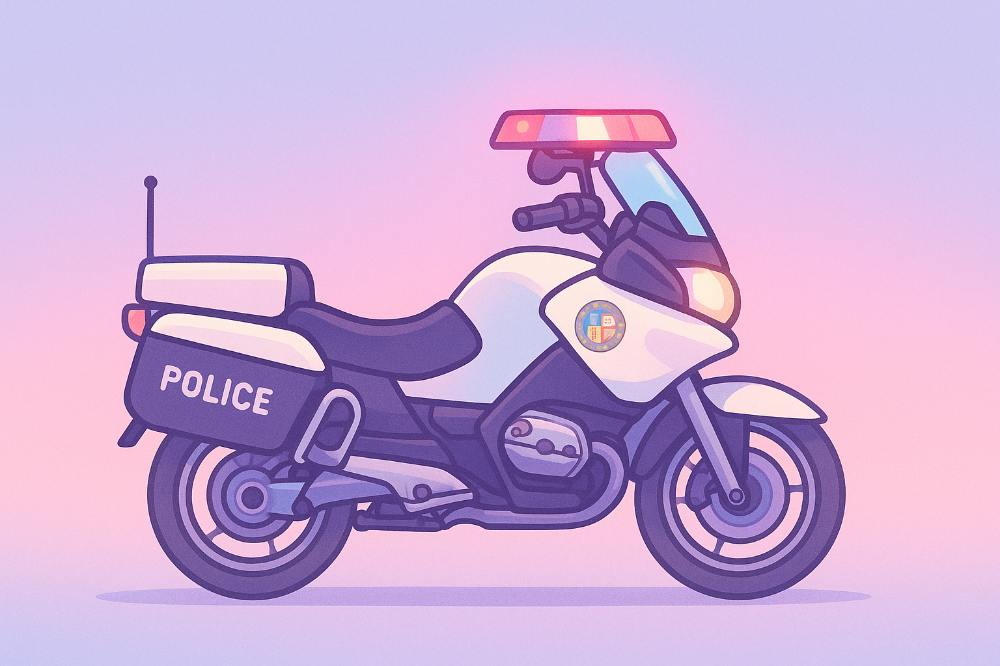

╔════≫──────๑ Kompendium Wiedzy LSPD ๑──────≪════╗
║───────────────────────────────────────────────────────────────────────────────────────────────────║╭━━━ Jednostka Merry ━━━╮
➔ Jednostka patrolowa Merry Jednostka „Merry” to jednostka motocyklowa LSPD, odpowiedzialna za szybkie patrole i działania w miejscach trudno dostępnych dla radiowozów. Jednostka reaguje na zgłoszenia obywateli, patroluje miasto, prowadzi działania prewencyjne i wspiera inne patrole w sytuacjach wymagających szybkiego przemieszczania się. Stanowi dynamiczne wsparcie głównych patroli i zwiększa mobilność LSPD w całym mieście.
